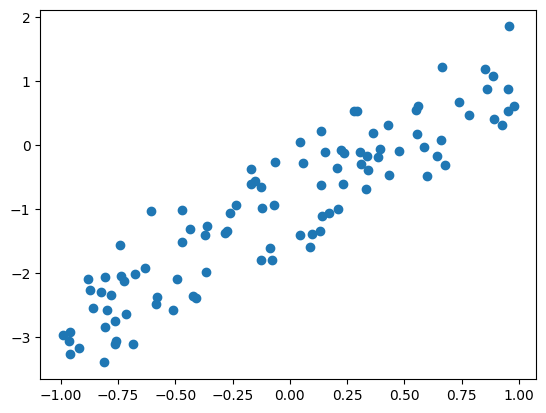

A notebook to implement a pretty simple model to learn about Linear Regression.
Generate Data
Here, we will generate a data with a known function, i.e., we will simulate data. The new term for this is Generative AI :). The advantage is, we exactly know the model. So, we will know if our understanding is correct.
Simulation is a very powerful technique when we are developing new theory or implementing a known theory. The ground truth is known, so we check our understanding and can debug if things do not go as expected.
Here, we will consider the following model.
\[
y = z + \epsilon \\
z = -1 + 2x_1 \\
x_1 \sim U(-1,1) \\
\epsilon \sim N(0,\sigma^2)
\
\]
import numpy as npimport matplotlib.pyplot as pltnp.random.seed(0) # set the seed for reproducibilityn =100;# no of samplesx =2*(np.random.random(n))-1;# featureb0 =-1b1 =2z = b0 + b1*x # the modelnoise = np.random.normal(0,0.5,n);# add some noise y = z + noise # responseplt.scatter(x,y)

Fit/ Train: Let us fit model using sklearn’s APIs
from sklearn.linear_model import LinearRegression# Reshape x to be a 2D array with one columnX = np.reshape(x, (n, 1))# Fit the linear regression modelmodel = LinearRegression()model.fit(X, y)# Print the coefficients and the scoreprint('coefs', model.coef_)print('intercepts', model.intercept_)print('score', model.score(X, y))
# Fit the linear regression model but w/o intercept.# Read sklearn documentation of the model APImodel_reduced = LinearRegression(fit_intercept=False)model_reduced.fit(X, y)# Print the coefficients and the scoreprint('coefs', model_reduced.coef_)print('intercepts', model_reduced.intercept_)print('score', model_reduced.score(X, y))
from sklearn.metrics import mean_squared_errormse = mean_squared_error(y, yh)print('mse w/o intercept', mse)mse = mean_squared_error(y, yh_reduced)print('mse with intercept', mse)
mse w/o intercept 0.24810966218116207
mse with intercept 1.0593507263189423
Note:
We did not create train and test splits. Since it was a simulation, if we split create a test split, the model behavior will change much. In other words, the train and test will have identical distributions by design, with very high probability.
However, when solving real world problems, where we are not sure about the data generative process, the hold out methods is essentials to test the generalization ability of the model , beyond the training data.
Questions
Will the MSE improve if I increase the data by 10 fold? In other words, will increasing the data size lead to model improvement?
How is MSE related to the noise variance?
Can the MSE be lowered by adding more features?
Should we use MSE or RMSE to communicate the error back to the user (hint: which metric has the same units as the response variable \(y\))